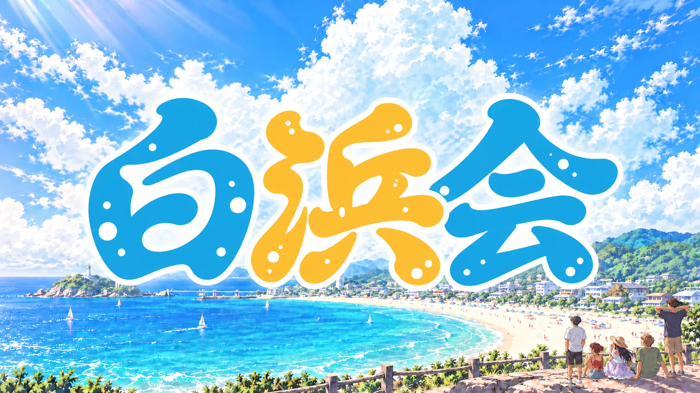

出演
リールに登場し、白浜や熊野の見どころを自分の言葉で案内します。
白浜会 メンバー募集
白浜・熊野の景色や人を届ける地域メディア「Shirahama Days」を運営しています。出演・撮影・編集・企画——興味のある役割から、一緒に始めませんか。

ROLES
リールに登場し、白浜や熊野の見どころを自分の言葉で案内します。
現地で景色や人、活動の様子を写真や動画に収めます。
撮影した素材をリールや投稿に仕上げ、公開後の反応を次の編集に生かします。
伝えたいテーマを考え、取材の段取りや投稿の構成をつくります。
役割をまだ決めていない方も、質問から始められます。
参加について相談するACTIVITIES
発信中
白浜と熊野の風景や旅の情報を、大学生の目線で発信しています。
構想・準備中
白良浜で、学生が企画や運営に関われる海の家を検討しています。
海外からの旅行者が宿を見つけやすくなるよう、Googleマップや予約サイト、英語ページの整備支援を準備しています。
熊野古道や大阪IRを訪れる人が白浜にも足を運ぶにはどうすればよいか、観光ルートや発信の方法を調べています。
撮影や編集に加え、経営戦略・マーケティング・デザイン・AIを地域で試してみたい方も、関心のあるテーマを聞かせてください。
関心のある活動があれば、相談のときに聞かせてください。
参加について相談するCONDITIONS
条件面で気になることがあれば、相談のときに確認できます。
参加について相談するAPPLY
応募フォームは準備中です。今は、白浜会のメール窓口で参加の相談を受け付けています。名前と、気になっている役割や活動を一言添えてください。役割をまだ決めていない方も、質問から始められます。
メールアドレス shirahamakai2027@gmail.com